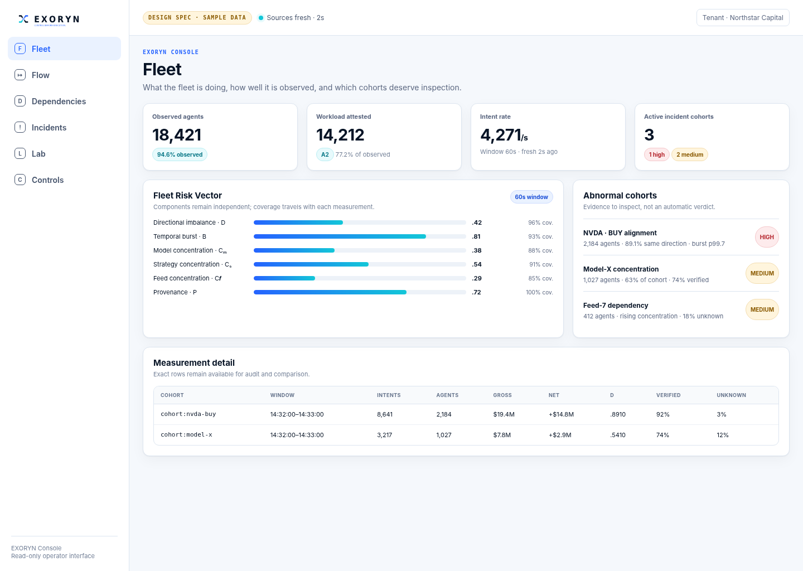
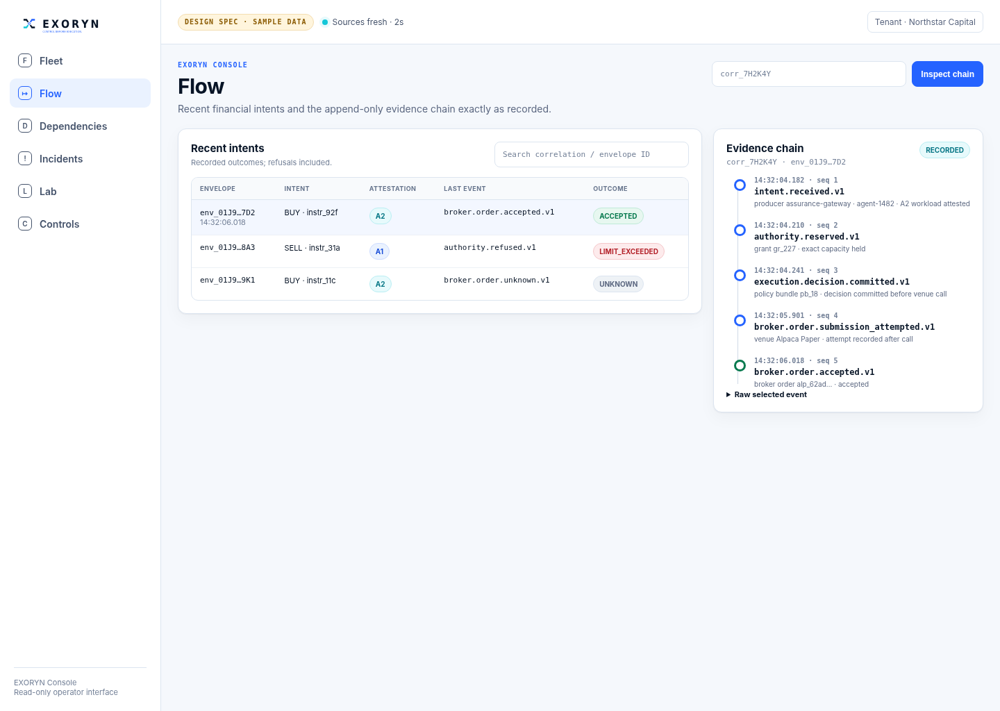
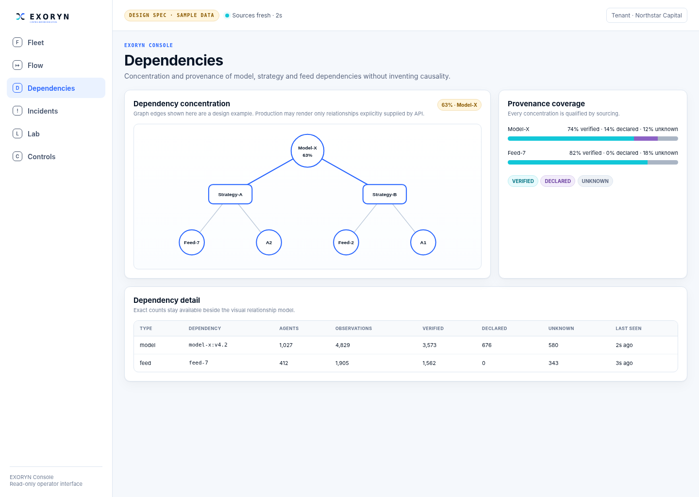
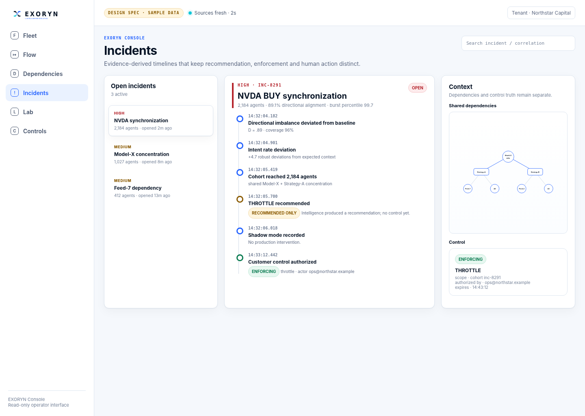
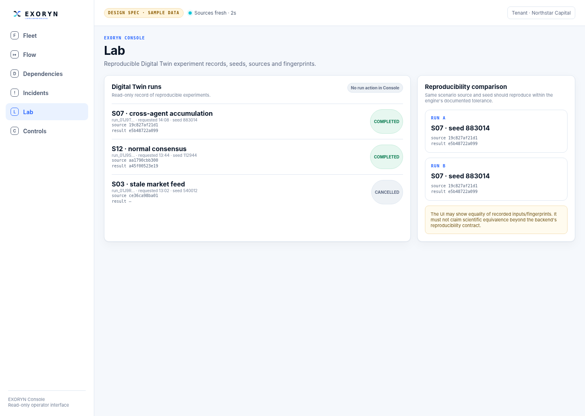
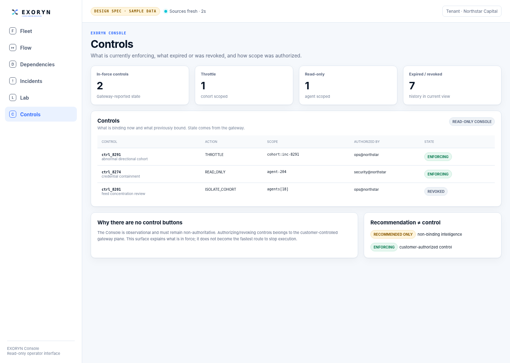
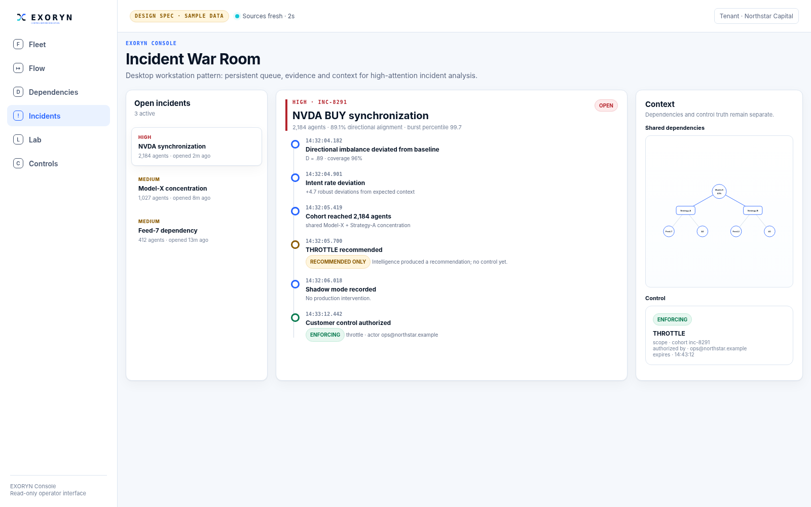

PRODUCT DESIGN AUTHORITY
EXORYN Product Design System V1
A product-level visual and interaction system for EXORYN Console, with shared semantics for future mobile and desktop clients.
Control before execution.
Grounded in the supplied V0 repository snapshot. All mockup values are sample data.
01 · PRINCIPLES
Design thesis
Evidence before decoration
The interface exists to make autonomous financial actions attributable, inspectable and reconstructable.
No magic score
Fleet Risk Vector components stay separate and carry coverage.
Recommendation ≠ enforcement
Intelligence and customer-authorized controls receive different semantics.
Read-only by architecture
The Console must never become a required execution dependency.
Truth states remain distinct
Unavailable, empty, stale, declared, verified and unknown are not interchangeable.
Institutional density
Dense information is appropriate when hierarchy and progressive disclosure remain strong.
02 · FOUNDATIONS
Foundations
Navy
#071426Blue
#2563FFCyan
#12C7D8Ice
#EAF2FFMist
#F5F8FC
Typography
Space Grotesk for display, Inter for UI/body, IBM Plex Mono for evidence/IDs/hashes.
Accessibility
WCAG 2.2 AA target. Product text uses accessible derived semantic tones while preserving the approved brand hues as anchors. State never relies on color alone.
03 · SEMANTICS
Data language
Availability
LIVE · STALE · UNAVAILABLE · EMPTY
Attestation
A0 unknown · A1 authenticated · A2 workload-attested · A3 reserved/not produced in V0
Provenance
VERIFIED · DECLARED · UNKNOWN
Control truth
RECOMMENDED ONLY · ENFORCING · REVOKED · EXPIRED
Evidence
RECORDED · CORRECTION · RECONCILED
Severity
LOW · MEDIUM · HIGH · CRITICAL
Multiple truth axes remain separate. Do not collapse them into one “status”.
04 · COMPONENTS
Core components
AppShell · SideNav · SurfaceHeader · MetricCard · Badge · DataTable · SearchField · FilterBar · DetailsDrawer · EmptyState · UnavailableState · StaleState · CopyableIdentifier
Central contract
Unavailable is not empty. When a source cannot be read, the UI explains the failure and shows no fake zero. When a source returns zero rows successfully, the UI shows a neutral empty state.
Interaction vocabulary
Inspect, search, filter, sort, compare, copy and navigate are valid read-only actions. Authorize, revoke, activate, approve, kill or submit are not V0 Console actions.
05 · EXORYN-NATIVE COMPONENTS
Operational components
FleetRiskVector · CoverageStack · CohortCard · IntentSummary · EvidenceTimeline · DependencyGraph · IncidentCard · IncidentTimeline · ControlState · SimulationRun · ReproducibilityPair · SystemHealth
These components encode the platform’s real domain distinctions. They are the main difference between an EXORYN design system and a generic admin dashboard kit.
06 · SCREEN · FLEET
Fleet

High-fidelity design reference · sample data only.
06 · SCREEN · FLOW
Flow

High-fidelity design reference · sample data only.
06 · SCREEN · DEPENDENCIES
Dependencies

High-fidelity design reference · sample data only.
06 · SCREEN · INCIDENTS
Incidents

High-fidelity design reference · sample data only.
06 · SCREEN · LAB
Lab

High-fidelity design reference · sample data only.
06 · SCREEN · CONTROLS
Controls

High-fidelity design reference · sample data only.
07 · IOS / ANDROID
Mobile companion
Mobile is incident-first monitoring, not a compressed workstation.
Initial navigation: Overview, Incidents, Fleet, Flow, More. Complex Lab and dependency exploration remain desktop/web tasks.
Implementation candidate: React Native + Expo, sharing tokens, API contracts and domain presentation logic.
08 · WINDOWS / MACOS / LINUX
Desktop workstation

Desktop differentiates itself through persistent incident workspaces, multi-pane evidence/context, native notifications and secure OS integration. Tauri is a candidate for a later technical study, not yet locked.
09 · GOVERNANCE
Implementation boundaries
Do not do during remediation
This V1 is a design specification. Do not merge UI changes into the active financial-integrity remediation branch unless explicitly authorized.
When implementation begins
Consume design tokens, replace inline CSS with product components, preserve all current truth semantics, and implement route by route. API gaps remain gaps: do not fabricate metrics/relationships because a mockup contains a design slot.
Acceptance
Visual implementation must be checked against this system using screenshots at wide desktop, laptop/tablet and small viewport sizes, plus keyboard/accessibility review.
10 · REPOSITORY GROUNDING
Source traceability
This V1 is grounded in Master Build Spec §17, §28, §48, §49 and §59; ADR-017; the six current `apps/console-web/app/*` surfaces; `Surface.tsx`; and the read-only API client.
The current Console is functional source material rather than a design system: it has the six required routes and careful semantics, but uses mostly inline styling, a global monospace root, basic tables and no shared visual/token architecture.
Preserve the semantics. Replace the scaffold visual language.
11 · NEXT STEP
V1 decision
Approve the product design direction before implementation.
Master direction: Light institutional operator UI.
Signature screen: Incidents / evidence reconstruction.
Signature visualization: Dependency concentration + provenance.
Mobile role: monitoring companion.
Desktop role: incident workstation.
Console authority: read-only.
After approval, create a dedicated UI implementation handoff for Claude against the post-remediation repository state.